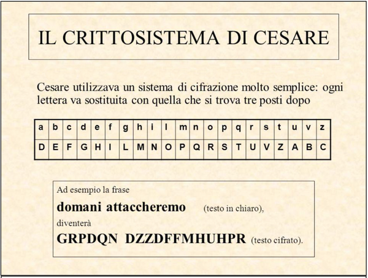

Somarello è un grande appassionato di cifratura ma, essendo stupido, per criptare i suoi messaggi ha usato un cifrario famosissimo... quello di Giulio Cesare.
Cesare al suo tempo inventò un cifrario per rendere incomprensibili i suoi messaggi militari... prova ad utilizzarlo anche tu!
Prova a decifrare questo messaggio: VRPDUHZZR
